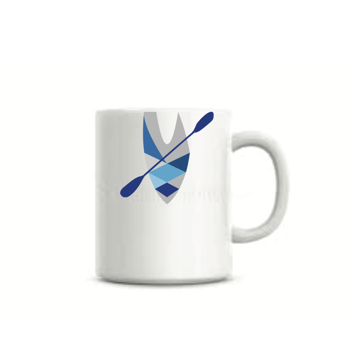
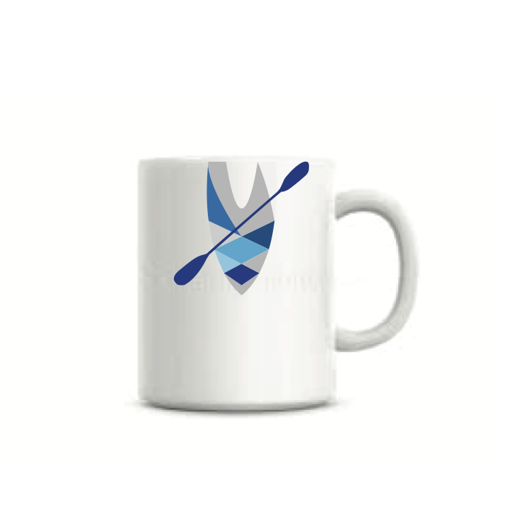

This project requires is to use adobe illustrator to design a brand book for a virtual company, including a logo, business card and letterhead. I like kayaking very much, so I immediately thought of the idea of companies related to kayak.
 
I started to search the store that I often rent kayak's website. I know that they can provide kayak, paddleboard and surf ski for people to rent and purchase, and offer courses and maintenance services. So the information on the site and my experience with the kayak. I sketched an idea map, and then started to develop the Company type, target customers, Company Profile.
Our company is close to the inland harbor, it has a calm sea, which is an ideal place for people who kayaking and paddling. We offer rental and teaching services, if you are an experienced or unexperienced paddler, we have advanced and private lesson for you.
The company's name is Adventurer because I think people who like kayak are courageous and adventurous.
Adventurer offers kayak rentals, sales, courses and Tours.
The target customers are People 6-75 years of age, who love outdoor activities and enjoy maritime sports and those who like a little adventurous.
After determining these contents, I began to design the brand book for this company.
At first, I wanted to combine the logo with the company name because kayak's shape is similar to "A." So I searched a lot of fonts, and I came up with a font that looked very vivid, which was reminiscent of motion, water. Besides, the "A" in this font is more similar to the shape of kayak than other fonts. Therefore, I tried sketching the kayak shape and the company name together. Also, I put the company name into the shape of the kayak, or try to draw people's posture when they are kayaking. Then I drew the logo I was satisfied with ai and painted it with the colour of the ocean. It turned out not what I wanted.
So I tried to start with the shape of the kayak. I used Ai to draw a 3d kayak in 2d on the computer. Due to kayak's symmetry, I removed some of the unnecessary kayak elements, leaving half shape, rope and half seat. Expanded the line of the rope, and connected some lines. Also, I added a paddle across the kayak to make it like the letter "A."
I tried to colour in the diamond and triangle of the rope. I chose the colours that represent the ocean, and they are all cool colours because I think kayak needs calmness and perseverance to complete, so the colours are different types of blue and gray. Gray is the refraction of waves in the sun; the human eye can see the colour.

Base on the logo, I tried to put my logo into the business card in many different ways .

In my letterhead, I use the left side of the logo, put it on the top & bottom of the letter.
In this project, I learned how to design a logo. I need to identify the logo that it will be used for, combined the ideas of the logo, and then sketching. When the sketch was finished, I can use the Ai to draw on the computer and thinking about the font and the colour I will use on the logo. I believe this process is significant for design a logo.